Manual do Gunslinger
O Gunslinger é um terminal para quem trabalha com .NET e Node.js, feito primeiro para o Windows 10 e 11 e com versões para Linux e macOS (veja Linux e macOS). Este manual cobre a versão 1.0.0. Os prints usam um projeto de exemplo chamado Loja (uma API .NET com um front em Node), em C:\src\Loja. Clique num print para abri-lo em tamanho real.
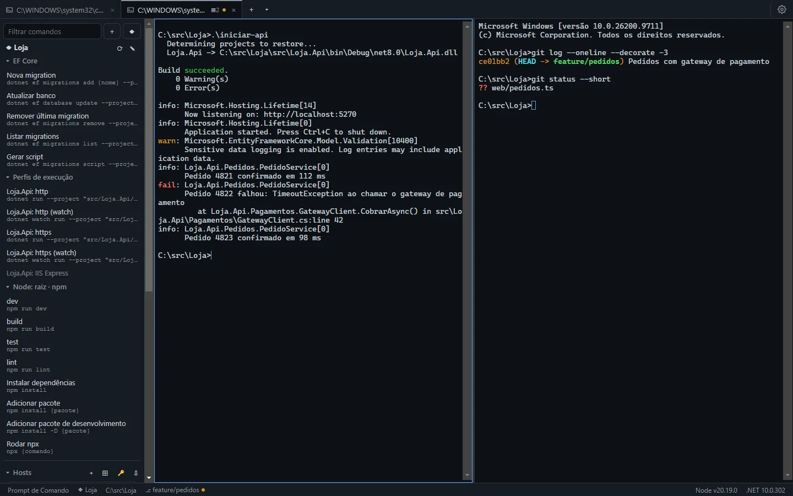
Instalação
Baixe o Gunslinger-Setup.exe e execute. A instalação é por usuário (não pede administrador), cria o atalho no Menu Iniciar e mantém suas configurações ao desinstalar.
Se o Windows SmartScreen avisar na primeira execução, clique em Mais informações → Executar assim mesmo. O instalador ainda não tem assinatura digital.
Primeiros passos
Cinco minutos para deixar o app pronto para um repositório:
- Abra o app. A primeira aba usa o perfil padrão. O menu ▾ ao lado do + lista os outros shells encontrados na máquina.
- Cadastre o projeto. No painel lateral, clique em ◆ (Projetos) → Novo projeto e escolha a pasta do repositório. O app detecta .NET e Node sozinho.
- Abra o projeto. Em Projetos, clique em Abrir. Uma aba nasce na raiz do repositório e o painel lateral passa a mostrar os comandos dele: EF Core, perfis de execução e scripts do
package.json. - Rode algo. Passe o mouse sobre um comando e clique em ▶, ou aperte Ctrl+P e digite parte do nome.
- Guarde o arranjo. Divida a aba (Alt+Shift+=), deixe cada painel onde você quer e use Salvar abas como workspace na paleta. Amanhã, Abrir workspace recria tudo.
A tela
| Área | O que tem |
|---|---|
| Barra de abas (topo) | Uma aba por terminal, + para nova aba, ▾ para escolher o perfil e a engrenagem das configurações à direita. |
| Painel lateral (esquerda) | Filtro, o projeto aberto com seus comandos, a seção Hosts (SSH) e os comandos salvos, por categoria. Ctrl+B mostra e esconde; arraste a borda direita para mudar a largura. |
| Terminal (centro) | Um ou mais painéis. O painel com foco tem a borda destacada. |
| Barra de status (rodapé) | Shell, projeto, pasta atual, branch do Git e versões do Node e do .NET. |
Atalhos
| Ação | Atalho padrão |
|---|---|
| Nova aba (perfil padrão) | Ctrl+T |
| Fechar painel ou aba | Ctrl+W |
| Próxima / anterior aba | Ctrl+Tab / Ctrl+Shift+Tab |
| Paleta de comandos | Ctrl+P |
| Buscar na saída | Ctrl+F |
| Histórico de comandos digitados | Ctrl+Shift+H |
| Painel lateral | Ctrl+B |
| Copiar / colar | Ctrl+Shift+C / Ctrl+Shift+V (Ctrl+C com seleção também copia) |
| Configurações | Ctrl+, |
| Dividir à direita / abaixo | Alt+Shift+= / Alt+Shift+- |
| Próximo / anterior painel | Alt+→ / Alt+← |
Trocar um atalho
- Abra Configurações → Atalhos.
- Clique em Alterar na linha da ação e pressione a nova combinação (Esc cancela).
- Se a combinação já for usada por outra ação ou pelo shell, a linha mostra o aviso. Confirme em Salvar.
Remover deixa a ação sem atalho (ela continua na paleta). Ações sem atalho de fábrica, como Recarregar ambiente ou Exportar comandos e perfis, aparecem com “—” e podem ganhar um.
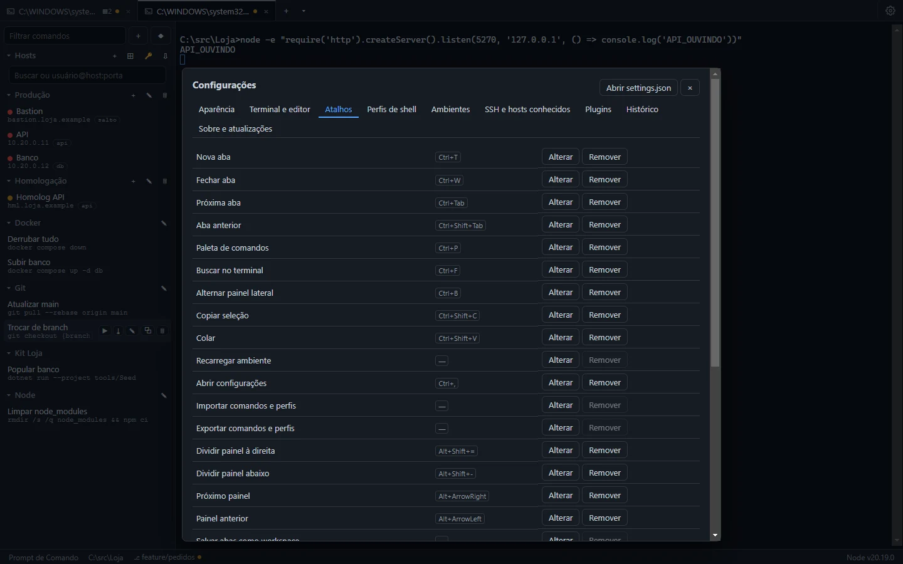
Bash e WSL: Ctrl+W, Ctrl+T, Ctrl+P, Ctrl+F e Ctrl+B também são atalhos do readline. Para devolvê-los ao shell, troque-os nas configurações (por exemplo, Ctrl+Shift+W). A tela avisa quando uma combinação conflita.
Abas e painéis
- O + abre uma aba com o perfil padrão; o menu ▾ ao lado abre qualquer perfil detectado (PowerShell, PowerShell 7, CMD, Git Bash, distribuições do WSL) ou customizado.
- Divida a aba em painéis com os atalhos acima; arraste as divisórias para redimensionar. Ctrl+W fecha o painel ativo, e a aba fecha junto com o último. A aba mostra ▦2 quando tem dois painéis.
- O botão do meio do mouse sobre a aba fecha a aba. Com muitas abas, elas encolhem e a roda do mouse percorre a barra.
- Um ponto amarelo na aba indica alterações não commitadas no repositório daquela pasta.
- Ao fechar o app com comandos rodando, ele pergunta antes e encerra a árvore de processos de cada aba (nada fica órfão).
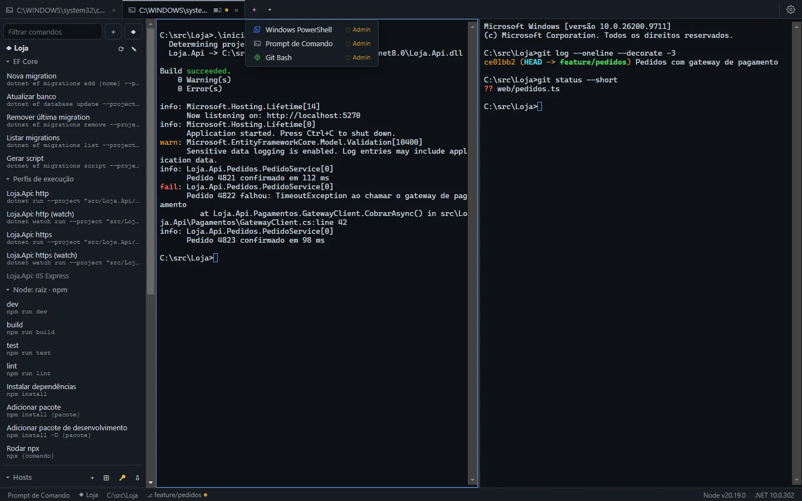
Perfis de shell
Em Configurações → Perfis de shell ficam os perfis detectados (com cor e a opção Ocultar, que tira o perfil do menu) e os seus. + Perfil customizado pede nome, executável, argumentos (um por linha), pasta inicial, cor e ícone.
| Nome | VS Dev PowerShell |
| Executável | powershell.exe |
| Argumentos | -NoExit-Command& 'C:\Program Files\Microsoft Visual Studio\2022\Community\Common7\Tools\Launch-VsDevShell.ps1' |
| Pasta inicial | C:\src |
O caminho do script muda conforme a edição do Visual Studio instalada.
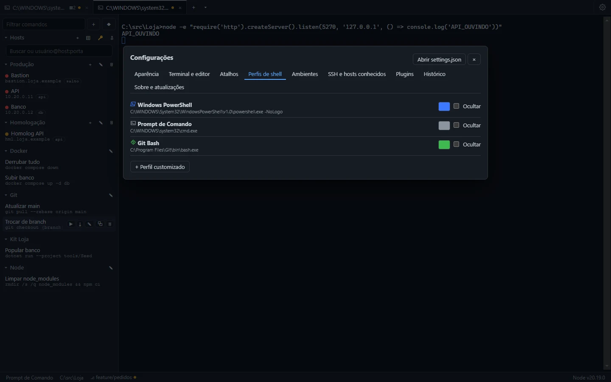
Buscar na saída
Ctrl+F abre a busca no painel ativo. Ela destaca todas as ocorrências e mostra a posição (“1 de 9”).
- Enter vai para a próxima ocorrência, Shift+Enter para a anterior (ou as setas ↑ e ↓).
- Aa diferencia maiúsculas, ab busca a palavra inteira e .* liga expressão regular.
- Esc fecha.
Ligue .* e busque Pedido \d+ falhou. Só as linhas de falha são destacadas.
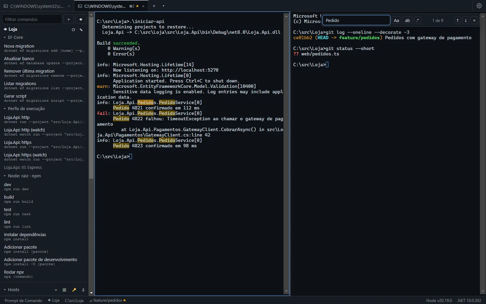
Comandos salvos
Comandos salvos ficam no painel lateral, agrupados por categoria, e valem para qualquer pasta. (Os comandos de um projeto são gerados sozinhos; veja Projetos.)
Criar um comando
- No painel lateral, clique em + (Novo comando).
- Preencha Nome e Comando. O resto é opcional:
- Categoria: o grupo no painel lateral (digite uma nova ou escolha uma existente).
- Shell de destino: “Aba ativa” roda onde você estiver. Se escolher um shell, o comando usa a aba ativa quando ela é desse shell e abre uma aba nova quando não é.
- Pasta de execução: se a aba ativa estiver em outra pasta, o app pergunta antes de trocar de pasta; em aba nova, ela já nasce na pasta.
- Clique em Salvar.
Variáveis
Tudo que estiver entre chaves vira uma pergunta na hora de executar:
git checkout {branch}
dotnet ef database update {migration} --connection "{conexao}"Quando o comando tem variáveis, o formulário mostra a seção Variáveis, com três campos por variável: Rótulo (o texto da pergunta), Valor padrão e Opções (uma por linha; com opções, a pergunta vira uma lista). Para escrever chaves de verdade no comando, dobre-as: {{ e }}.
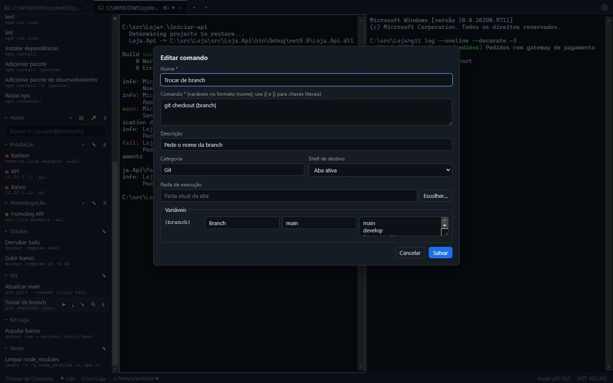
git checkout {branch} com rótulo, valor padrão e lista de opções para {branch}.Executar
- Passe o mouse sobre a linha (ou selecione-a): ▶ executa e ⤓ só escreve o comando no terminal, sem Enter, para você revisar ou completar.
- Com a linha em foco, Enter executa e Shift+Enter insere.
- Clicar na linha só seleciona: nenhum comando salvo roda sem uma ação explícita.
- ✎ edita, ⧉ duplica e 🗑 exclui. O ✎ ao lado do nome da categoria renomeia a categoria inteira.
- Filtrar comandos, no topo do painel, busca por nome, texto do comando, categoria e descrição.
Se o comando tem variáveis, o app pede os valores e mostra o comando final antes de enviar:
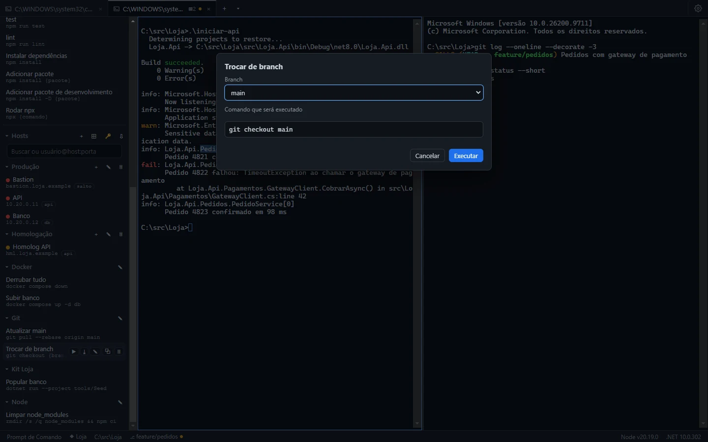
| Nome | Comando | Variáveis |
|---|---|---|
| Subir banco | docker compose up -d {servico} | servico: opções db, redis, rabbit |
| Matar porta | npx kill-port {porta} | porta: padrão 5270 |
| Logs do pod | kubectl logs -f deploy/{app} -n {namespace} | namespace: opções dev, hml |
| JSON literal | curl -d "{{\"id\": {id}}}" http://localhost:5270/pedidos | só id é variável; {{ e }} viram chaves |
Paleta de comandos
Ctrl+P busca em tudo de uma vez: comandos salvos, comandos de projeto, scripts, workspaces, perfis de shell, perfis de ambiente, hosts SSH (“Conectar: Homolog API”) e ações do app. A coluna da esquerda diz o tipo do item (Perfil, Comando, Ação).
- A busca ignora acentos e aceita letras fora de ordem: “migra” encontra “Nova migration”.
- Enter executa; Shift+Enter insere sem executar; Esc fecha.
- Itens em cinza estão indisponíveis e dizem o motivo (por exemplo, “Abra um projeto .NET para usar”).
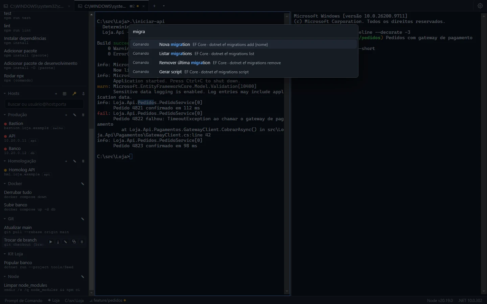
bash | Nova aba: Git Bash (e a versão como administrador) |
teste | Executor de testes |
porta | Docker e portas |
ambiente | Nova aba com ambiente / Aplicar ambiente |
workspace | Salvar abas como workspace, Gerenciar workspaces e cada workspace salvo |
conectar | Os hosts SSH cadastrados |
Projetos .NET e Node
Cadastrar
- Clique em ◆ no painel lateral (ou Gerenciar projetos na paleta) → Novo projeto.
- Escolha a pasta raiz do repositório e dê um nome ao projeto.
- Confira o que o app detectou: os tipos (.NET, Node), o projeto das migrations (
--project) e o de startup (--startup-project), e o gerenciador de pacotes de cadapackage.json. Troque o que não estiver certo. - Opcional: escolha o shell padrão do projeto e defina variáveis do projeto, que preenchem sozinhas as variáveis de mesmo nome nos comandos.
Abrir um projeto abre uma aba na raiz dele, com o shell do projeto. A partir daí o painel lateral mostra o projeto no topo e os comandos rodam sempre na pasta certa: numa aba já ligada ao projeto ou, se não houver, numa aba nova.
O que o app gera
- EF Core: nova migration, atualizar banco, remover a última, listar e gerar script, já com
--projecte--startup-project. Há um aviso se odotnet-efnão estiver instalado. - Perfis de execução (
launchSettings.json): cada perfil do tipo Project viradotnet runedotnet watch runcom--launch-profile. Perfis de IIS Express aparecem desativados com o motivo. - Node: cada
package.json(inclusive em subpastas de monorepos) com seus scripts e o gerenciador detectado pelo lockfile (npm, pnpm ou yarn), além de instalar dependências, adicionar pacote e npx.
- Ctrl+P, digite
migrae escolha Nova migration. - Informe o nome, por exemplo
AdicionaStatusDoPedido. O app executa algo como:dotnet ef migrations add AdicionaStatusDoPedido --project "src/Loja.Api/Loja.Api.csproj" --startup-project "src/Loja.Api/Loja.Api.csproj" - Depois, Atualizar banco na mesma lista.
O botão ↻ (Reanalisar projeto) ao lado do nome do projeto relê os arquivos (útil depois de criar um script novo no package.json ou um perfil no launchSettings.json).
Executor de testes
Com um projeto aberto, Executor de testes (paleta) lista os projetos de teste .NET (xUnit, NUnit, MSTest) e os pacotes Node com Vitest ou Jest.
- Escolha o alvo na lista e clique em Rodar. Os testes rodam fora do terminal; o resumo mostra falhas, aprovados e ignorados.
- Numa falha, a mensagem e o stack trace aparecem abaixo do teste. Clique no caminho (
pedidos.test.ts:13:45) para abrir o arquivo no editor, na linha. - Corrija e use Rodar só este na linha do teste, ou Rodar só as falhas.
Só falhas filtra a lista, Mostrar saída abre a saída bruta do executor e dá para cancelar uma execução em andamento.
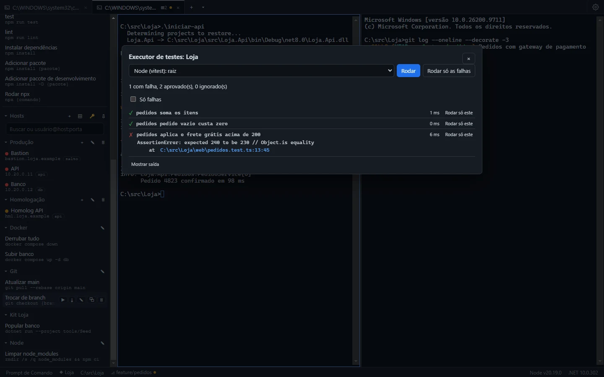
pedidos.test.ts:13.Docker e portas
Docker e portas (paleta) tem duas partes.
Portas em escuta: as portas TCP abertas na máquina, com o endereço e o processo dono. Quando o processo nasceu de uma aba do Gunslinger, a coluna Aba mostra qual (clique para ir até ela). Encerrar processo pede confirmação. O filtro aceita número de porta ou nome de processo.
Containers: vêm do CLI do Docker, com iniciar, parar, reiniciar e remover; Logs e Shell abrem uma aba nova com docker logs -f ou docker exec -it … sh. Sem Docker ou com o daemon parado, o painel mostra o motivo. A lista se atualiza a cada 5 segundos.
Abra o painel, digite 5270 no filtro e veja quem está com a porta. Se for um dotnet watch esquecido em outra aba, clique na aba para ir até ele, ou use Encerrar processo.
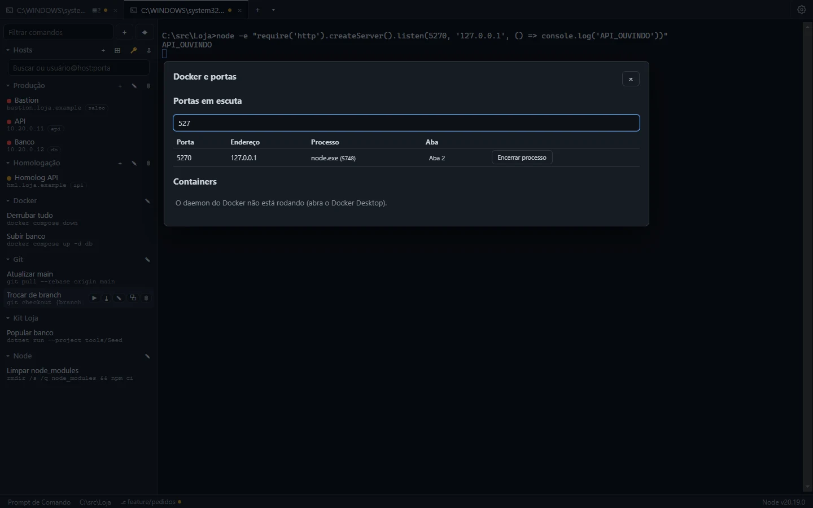
node.exe da aba 2. Embaixo, o aviso de que o Docker não está rodando.Perfis de ambiente
Um perfil de ambiente é um conjunto de variáveis com nome e cor: Dev, Homologação, Produção.
Criar
- Abra Configurações → Ambientes e clique em + Ambiente.
- Dê um nome, escolha a cor e escreva as variáveis, uma por linha, no formato
NOME=valor:ASPNETCORE_ENVIRONMENT=Staging ConnectionStrings__Loja=Server=hml-sql;Database=Loja;Trusted_Connection=True Pagamentos__UrlBase=https://hml.pagamentos.example - Marque Ambiente sensível nos que não podem ser aplicados por engano (produção).
- Salvar ambiente.
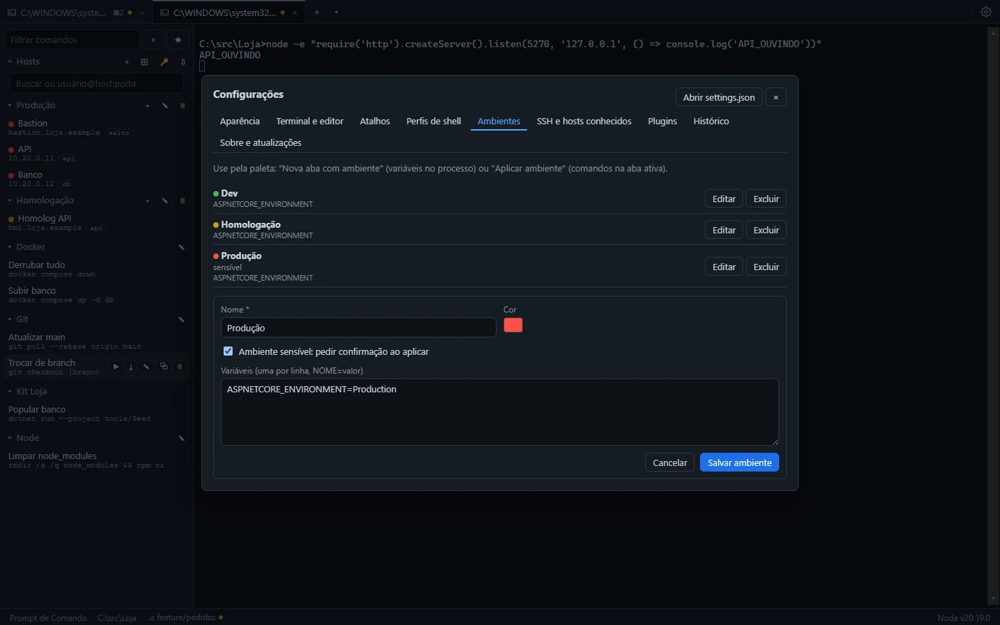
Usar
Pela paleta, de dois jeitos:
- Nova aba com ambiente: … abre uma aba em que as variáveis já estão no processo do shell. Nada é digitado, então os valores não aparecem na tela nem no histórico.
- Aplicar ambiente: … digita os comandos na aba ativa (
setno CMD,$env:no PowerShell,exportno Bash), depois de mostrar a prévia. Ambientes sensíveis pedem confirmação explícita.
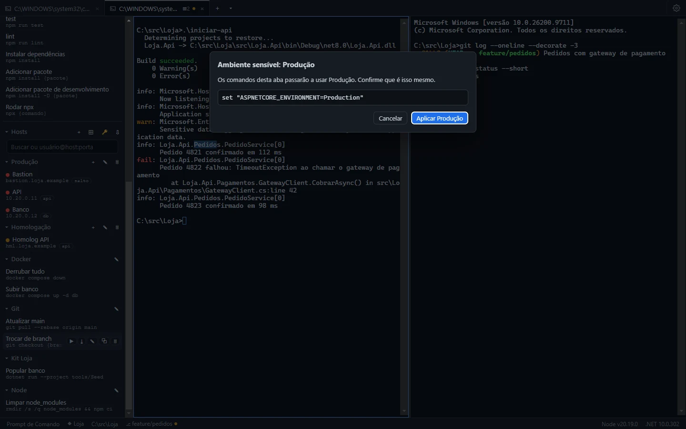
A aba e a barra de status mostram o ambiente com a cor dele.
Os valores ficam em texto puro no settings.json: evite guardar segredos de produção ali.
Workspaces
Um workspace guarda um arranjo de abas e painéis: perfil, pasta, projeto e, se você quiser, um comando inicial por painel.
Salvar e ajustar
- Monte as abas e painéis do dia.
- Na paleta, Salvar abas como workspace, e dê um nome.
- Em Gerenciar workspaces → Editar, cada painel tem três campos: perfil, pasta e comando inicial. + Aba acrescenta uma aba; “remover” tira uma.
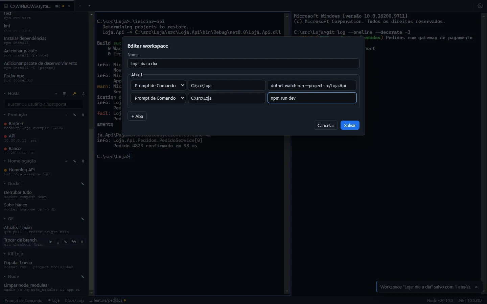
dotnet watch e o front em npm run dev.Abrir
Use Abrir em Gerenciar workspaces ou digite o nome do workspace na paleta. O app recria as abas e painéis. Se houver comandos iniciais, ele lista os comandos e só executa depois da sua confirmação; dá para abrir sem executar nada.
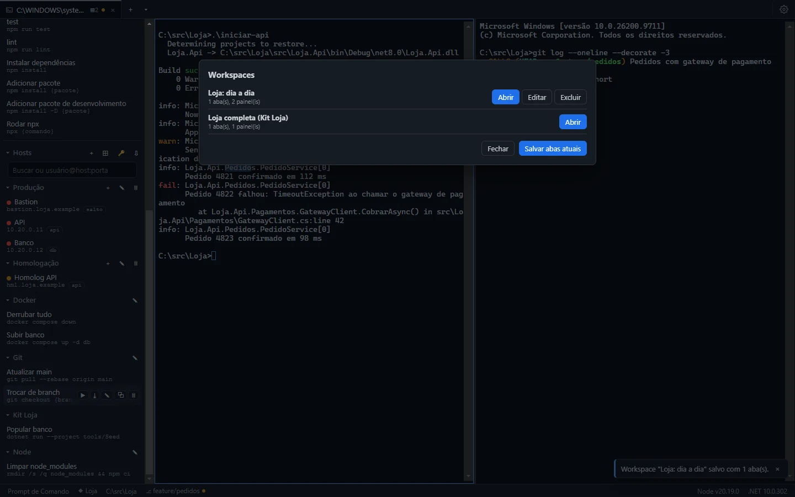
Um painel também pode ser um host SSH (escolha “SSH: nome do host” no lugar do perfil). Com comando inicial, o painel conecta depois da confirmação e só envia o comando quando a conexão estiver pronta; se a conexão falhar ou for cancelada, o comando não é enviado. Sem comando inicial, o painel abre como “Desconectado”.
Hosts SSH
A seção Hosts do painel lateral guarda os servidores que você acessa. A conexão é feita pelo próprio app (não depende do ssh.exe) e cada conexão vira uma aba de terminal como as outras: atalhos, painéis, busca, links e copiar/colar funcionam igual.
Cadastrar
- + cadastra um host: nome, endereço (nome DNS, IPv4 ou IPv6), porta, usuário, identidade ou chave, host de salto, keepalive, cor e tags.
- ⊞ cria um grupo. Grupos podem ficar dentro de grupos e definir porta, usuário, identidade, chave, host de salto, keepalive e encaminhamento do agente.
- Um campo vazio no host herda do grupo mais próximo, e o formulário mostra de onde vem o valor.
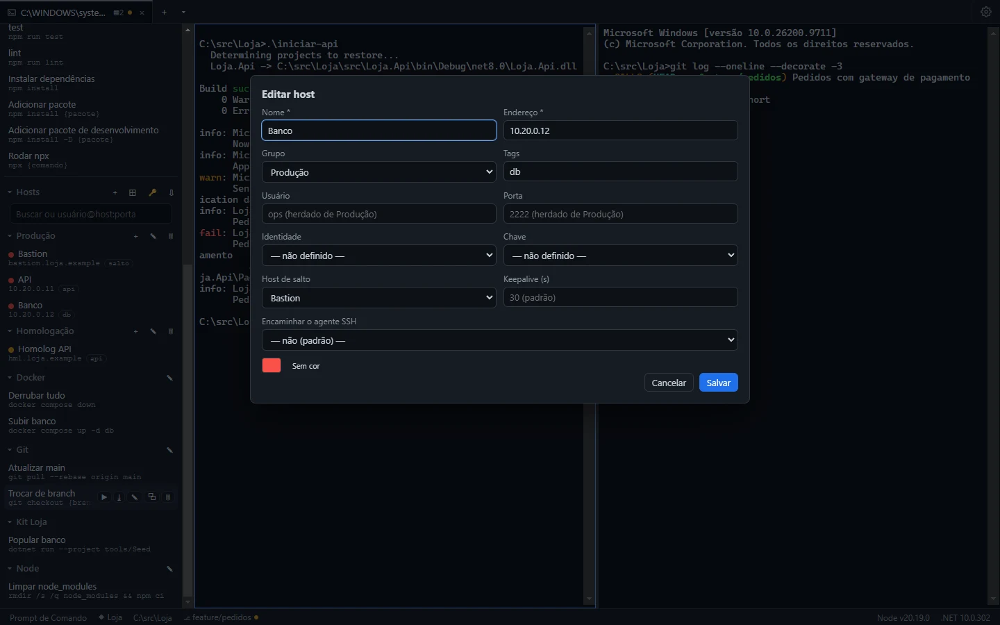
ops e 2222 do grupo Produção, e passa pelo host de salto “Bastion”.- Crie o grupo Produção com usuário
opse porta2222. - Dentro dele, cadastre Bastion (
bastion.loja.example), o único acessível de fora. - Cadastre API (
10.20.0.11) e Banco (10.20.0.12) com Host de salto = Bastion. Usuário e porta ficam vazios: vêm do grupo. - Conectar em “Banco” abre primeiro a conexão com o Bastion e, por dentro dela, a do Banco.
Conectar
- Enter ou clique duplo na linha do host, o botão ▶, ou Conectar: … na paleta.
- ◫ e ⊟ conectam dividindo o painel ativo à direita ou abaixo. Dividir um painel SSH abre outro painel no mesmo servidor.
- Conexão rápida: digite
usuário@endereço:portana busca de hosts (por exemplo,deploy@10.0.0.12:2222) e escolha Conectar, sem cadastrar. Salvar host abre o formulário já preenchido. - ✎ edita, ⧉ duplica (a cópia usa a mesma identidade e chave) e 🗑 exclui. Excluir um host usado como salto avisa quem perde o salto; excluir um grupo com hosts pergunta se eles sobem para o grupo acima ou são excluídos junto.
Ao conectar, a aba mostra a etapa (conectando, verificando o servidor, autenticando). A autenticação tenta, nesta ordem, a chave configurada, o agente SSH, a senha salva e as perguntas do servidor (keyboard-interactive, inclusive código 2FA). O que faltar é pedido num diálogo; Salvar no keychain vem desmarcado e não aparece para códigos 2FA. Várias abas do mesmo host compartilham uma conexão, então a senha e o código são pedidos uma vez só.
Host de salto: o salto pode ser outro host ou um grupo, e pode ter o próprio salto (até 5). Cada salto passa pela verificação do servidor e usa as próprias credenciais. Saltos em ciclo são recusados ao salvar.
Queda e reconexão: se a conexão cair (por exemplo, o servidor parou de responder ao keepalive), a saída fica na tela com “Conexão encerrada” e o motivo. Reconectar (ou Enter) abre uma sessão nova no mesmo painel; o app nunca reconecta sozinho. Se a conexão falhar, a aba mostra a mensagem com Tentar de novo e Editar host.
Importar do OpenSSH
O ⇩ da seção Hosts (ou Importar hosts do ~/.ssh/config na paleta) lê Host, HostName, User, Port, IdentityFile, ProxyJump, ServerAliveInterval e ForwardAgent e mostra a prévia antes de gravar. Por exemplo, este trecho:
Host bastion
HostName bastion.loja.example
User ops
Port 2222
Host banco
HostName 10.20.0.12
ProxyJump bastion
IdentityFile ~/.ssh/id_ed25519vira dois hosts no grupo “Importados do OpenSSH”, com “banco” usando “bastion” como salto e a chave referenciada no keychain. Os valores de Host * viram o padrão do grupo. O que não for suportado (Match, Include, curingas, outras diretivas) aparece na prévia como “não será importado”.
Keychain
O 🔑 da seção Hosts (ou Keychain na paleta) guarda chaves e identidades.
- Chaves: importe um arquivo (guardando uma cópia cifrada ou usando o arquivo do disco a cada conexão), cole o texto da chave ou gere uma nova (Ed25519, recomendado, ou RSA 4096, com frase-senha opcional). Aceita Ed25519, ECDSA e RSA nos formatos OpenSSH e PEM. Cada chave mostra o tipo e o fingerprint SHA256.
- Identidades: um usuário com senha e/ou chave. Hosts e grupos que usam a identidade recebem a troca de senha de uma vez.
- Excluir uma chave ou identidade em uso lista quem a usa; depois disso, esses hosts passam a herdar do grupo ou a pedir a credencial.
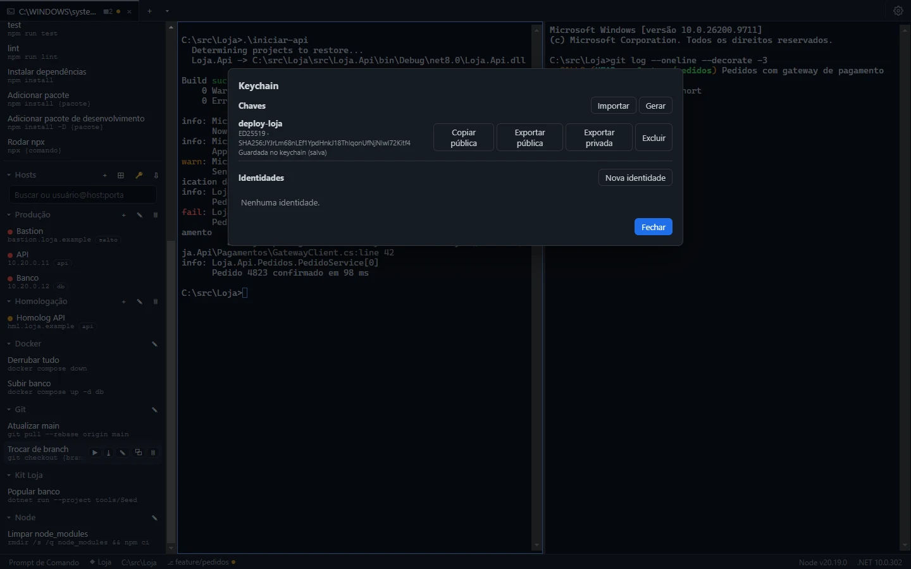
- No keychain, Gerar → nome
deploy-loja, tipo Ed25519. - Copiar pública põe na área de transferência uma linha como
ssh-ed25519 AAAA… deploy-loja. - No servidor, cole essa linha em
~/.ssh/authorized_keysdo usuário. - No host (ou no grupo), escolha
deploy-lojano campo Chave.
Senhas, frases-senha e chaves guardadas ficam cifradas pelo cofre do Windows (DPAPI), ligadas à sua conta, e nunca aparecem na tela: o formulário mostra só “Senha salva”, com Substituir e Apagar. Copiados para outra conta ou outro PC, esses segredos aparecem como “indisponível” e a conexão pede a credencial de novo.
O agente SSH é configurado em Configurações → SSH e hosts conhecidos: OpenSSH do Windows (serviço ssh-agent, o padrão), Pageant ou nenhum. O encaminhamento do agente fica desligado por padrão e é ligado por host ou por grupo.
Hosts conhecidos
Toda conexão, inclusive a dos hosts de salto, confere a chave do servidor antes de enviar qualquer credencial.
- Servidor novo: o app mostra o endereço e o fingerprint SHA256 e oferece Confiar e conectar (grava a chave), Conectar só desta vez ou Cancelar.
- Chave alterada: a conexão é bloqueada com um aviso e os fingerprints antigo e novo. Só continua por Substituir a chave gravada…, que pede uma segunda confirmação. Faça isso só se souber por que a chave mudou (por exemplo, o servidor foi reinstalado).
- Chave revogada (
@revokednoknown_hostsimportado): bloqueia sem opção de continuar.
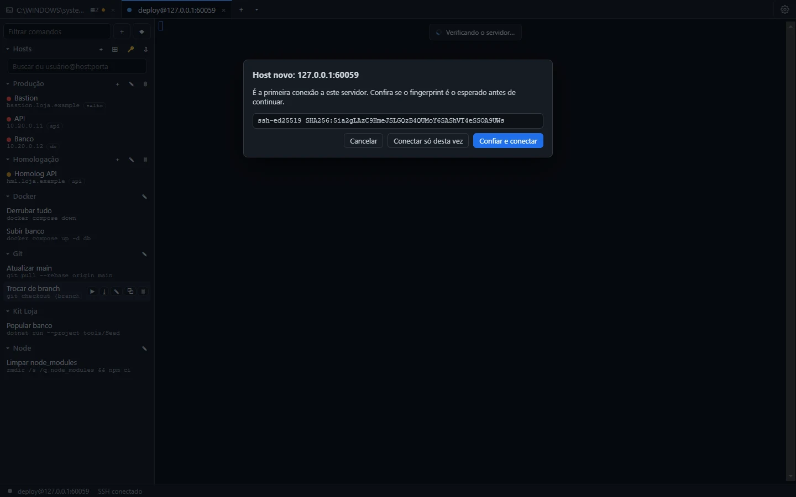
Para ver o fingerprint no próprio servidor e comparar:
ssh-keygen -lf /etc/ssh/ssh_host_ed25519_key.pubEm Configurações → SSH e hosts conhecidos ficam a lista (com busca e exclusão), o agente, o keepalive padrão (30 s; 0 desliga) e o tempo limite de conexão (20 s). Importar ~/.ssh/known_hosts traz as chaves que o OpenSSH já conhece, inclusive as com nome em hash.
Abas como administrador
No menu ▾, o botão 🛡 Admin ao lado de PowerShell, CMD e Git Bash abre o shell elevado (também na paleta: “Nova aba como administrador: …”). A confirmação é sempre o UAC do Windows.
- Com o sudo do Windows em modo inline (Windows 11 24H2+) ou o gsudo, a aba elevada fica dentro do app, marcada com 🛡 na aba e “Administrador” na barra de status.
- Sem nenhum dos dois, o shell elevado abre numa janela separada.
Barra de status
Da esquerda para a direita: o shell, o ambiente (se houver), o projeto (◆), a pasta atual, a branch do Git (com ● quando há alterações) e, à direita, as versões do Node e do .NET da pasta atual (respeitando o global.json e os shims do Volta). Com o fnm por sessão, o PowerShell e o Bash informam a versão do Node da aba.
Quando um instalador ou o setx muda as variáveis de ambiente, o app recarrega o ambiente sozinho; para mudanças que não avisam o Windows, use Recarregar ambiente na paleta. Abas abertas antes da mudança mostram “ambiente desatualizado · Reiniciar aba”.
Numa aba SSH, a barra mostra usuário@endereço:porta e se a conexão está ativa, no lugar de projeto, pasta, Git e versões (que são da sua máquina, não do servidor).
Sessão, histórico de comandos e processos
- Última sessão: ao abrir, o app reabre as abas e painéis que estavam abertos (sem executar nenhum comando). Abas SSH voltam como “Desconectado”, com Conectar, e não conectam sozinhas; se o host tiver sido excluído, mostram “Host não encontrado”. Conexões rápidas não são reabertas.
- Histórico de comandos: Ctrl+Shift+H busca nos comandos digitados em todas as abas, com a pasta e quando foram usados. Enter escreve o comando no terminal; Ctrl+Enter executa. Comandos começados por espaço não são guardados (útil para algo com senha na linha).
- Processos que saem da aba: ao fechar uma aba, os processos que ela iniciou e continuam rodando fora dela (
start, servidores em segundo plano) são listados com Encerrar ou Manter rodando. - Abas SSH não entram na pergunta de “comandos rodando” ao fechar: o app não sabe o que roda no servidor. Fechar a aba encerra a sessão remota.
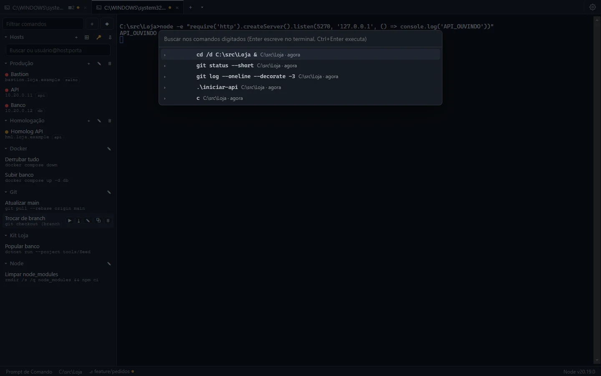
Terminal e editor
Em Configurações → Terminal e editor:
| Opção | O que faz |
|---|---|
| Perfil padrão | O shell do + e do Ctrl+T. |
| Editor e argumentos | O programa que abre os caminhos clicados na saída. O padrão é code com -g e {file}:{line}:{column}. |
| Notificar comandos demorados | Avisa pelo Windows quando um comando que levou mais que o tempo definido (10 s) termina com a janela fora de foco. |
| Ctrl+C copia | Com texto selecionado, copia; sem seleção, interrompe o comando. |
| Reabrir a última sessão | Liga ou desliga a reabertura das abas ao iniciar. |
| Guardar os comandos digitados | Liga o histórico de comandos; Limpar histórico apaga o que foi guardado. |
| Processos ao fechar a aba | Perguntar, encerrar sempre ou manter rodando. |
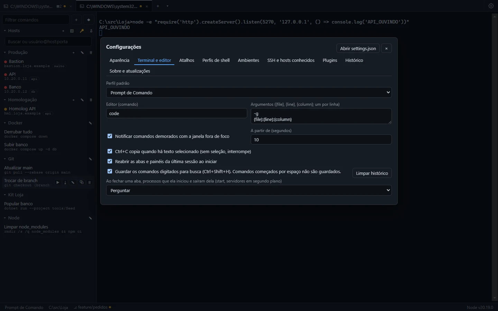
| Editor | Comando | Argumentos (um por linha) |
|---|---|---|
| VS Code | code | -g{file}:{line}:{column} |
| Rider | rider64.exe | --line{line}{file} |
| Visual Studio | devenv.exe | /Edit{file} |
O comando precisa estar no PATH, ou use o caminho completo do executável.
Atualizações
O app procura versões novas ao abrir e a cada 4 horas, baixa em segundo plano e mostra Versão X pronta · Reiniciar na barra de status. A instalação acontece ao reiniciar ou na próxima vez que você fechar o app. Em Configurações → Sobre e atualizações ficam a versão, Procurar atualizações e a opção de desligar a verificação automática.
Destaque de logs e links
Erros (vermelho), avisos (amarelo) e sucesso (verde) são destacados na saída: MSBuild, níveis fail:/warn: do ASP.NET Core, npm WARN e resultados de testes. O destaque é só visual: copiar e buscar veem o texto original. Ligue e desligue com Alternar destaque de logs na paleta.
Para destacar termos seus, crie regras no settings.json (botão Abrir settings.json nas configurações):
"logHighlight": {
"enabled": true,
"rules": [
{ "pattern": "PEDIDO-\\d+", "ignoreCase": false, "foreground": "#58a6ff" },
{ "pattern": "timeout|deadlock", "ignoreCase": true, "foreground": "#f85149" }
]
}A primeira regra pinta de azul códigos como PEDIDO-4821; a segunda pinta de vermelho “timeout” e “deadlock” em qualquer caixa. O pattern é uma expressão regular, e a barra invertida precisa ser dobrada dentro do JSON.
Ctrl+clique abre URLs no navegador e caminhos como Program.cs(42,13) ou src/App.tsx:10:5 no editor configurado, já na linha.
Cores
Em Configurações → Aparência ficam a fonte, o tamanho, o cursor e o histórico de linhas do terminal, as cores da interface (fundo, painéis, borda, texto, destaque, erro, aviso e sucesso) e as do terminal (fundo, texto, cursor, seleção e as 16 cores ANSI). Aplicar tema copia um conjunto pronto para as cores do terminal. Clicar numa cor abre o seletor:
- campo hexadecimal, que aceita
#rrggbb,#rgb,rgb(18, 52, 86)ou18, 52, 86; - controles R, G e B de 0 a 255, com a cor atual ao lado da nova;
- a paleta: + Salvar cor guarda, o botão direito remove, um clique duplo aplica.
A cor só é gravada em Aplicar (ou Enter); Esc descarta. Restaurar cores padrão volta a interface ao original.
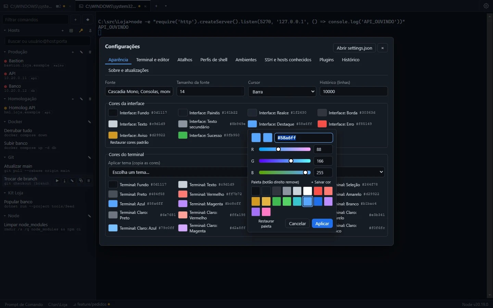
Plugins
Plugins são só dados: uma pasta em %APPDATA%\Gunslinger\plugins\ com um plugin.json. Nenhum código de plugin é executado. Eles podem trazer comandos, workspaces, perfis de shell, temas e regras de destaque, que aparecem marcados com o nome do plugin e sem editar ou excluir. Servem para compartilhar o kit de um time.
Criar um plugin
- Em Configurações → Plugins, clique em Abrir pasta de plugins.
- Crie uma pasta (por exemplo,
kit-loja) com um arquivoplugin.json:{ "id": "kit-loja", "name": "Kit Loja", "version": "1.0.0", "contributes": { "commands": [ { "id": "seed", "name": "Popular banco", "command": "dotnet run --project tools/Seed", "category": "Kit Loja" } ], "workspaces": [ { "id": "full", "name": "Loja completa", "tabs": [{ "type": "pane", "pane": { "command": "npm run dev" } }] } ] } } - O plugin aparece na lista sem reiniciar (ou clique em Recarregar). Se o arquivo tiver erro, a lista mostra o que está errado.
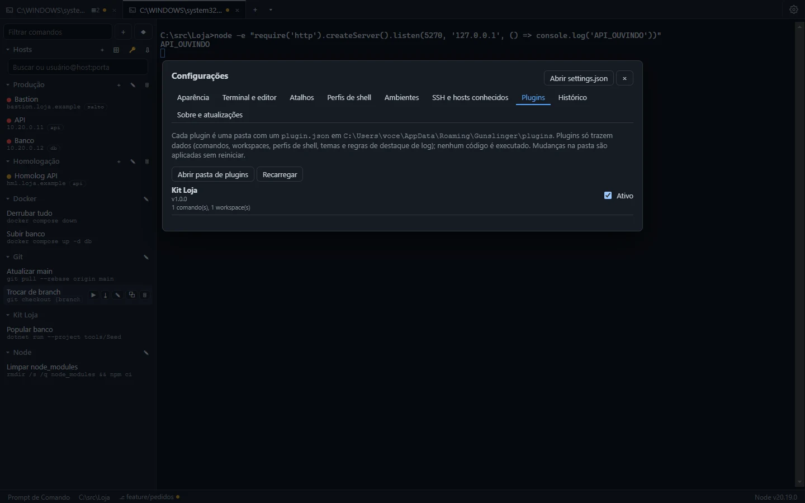
Desmarcar Ativo tira da tela tudo que o plugin trouxe, sem apagar a pasta.
Histórico de dados
A cada mudança em configurações, comandos, projetos, workspaces ou hosts (pela interface ou editando os arquivos), o app guarda uma versão local. Ficam as 50 automáticas mais recentes; pontos com nome não são apagados sozinhos.
- Antes de uma mudança grande (importar comandos de alguém, reorganizar categorias), digite um nome e clique em Criar ponto de restauração.
- Restaurar volta tudo para aquela versão. O estado atual fica salvo como “Antes de restaurar”, então dá para desfazer.
- Excluir remove uma versão.
O keychain e os hosts conhecidos ficam de fora, para que restaurar uma versão antiga não traga de volta como confiável uma chave de servidor que você substituiu.
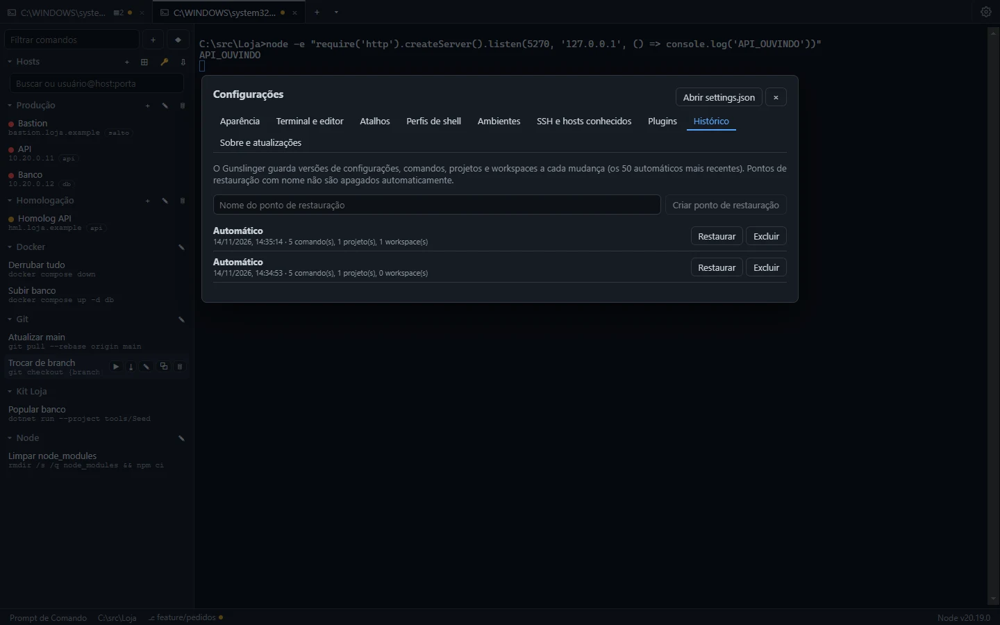
Configuração
Os arquivos ficam em %APPDATA%\Gunslinger:
| Arquivo | Conteúdo |
|---|---|
settings.json | aparência, atalhos, editor, perfil padrão, notificações, ambientes e perfis de shell (aceita comentários) |
commands.json | comandos salvos |
projects.json | projetos |
workspaces.json | workspaces |
hosts.json | hosts e grupos SSH |
keychain.json | chaves e identidades (só nomes, tipos e fingerprints; nenhum segredo) |
secrets.json | senhas, frases-senha e chaves guardadas, cifradas pelo cofre do Windows |
known_hosts.json | chaves dos servidores em que você confia |
history/, plugins/ | histórico de dados e plugins |
Mudanças feitas direto nos arquivos são aplicadas sem reiniciar. Se um arquivo ficar inválido, o app abre com os valores padrão, mostra a linha do erro e não grava nada nele até você corrigir (a versão anterior fica em <arquivo>.bak).
Importar e exportar
Exportar comandos e perfis e Importar comandos e perfis (paleta) trocam comandos, perfis, projetos e hosts SSH com outras pessoas. A importação mostra a prévia de cada item e deixa você resolver os conflitos antes de gravar. As pastas raiz dos projetos são exportadas como estão e podem não existir na outra máquina.
Ao exportar hosts, vão junto os grupos, os hosts de salto e as identidades, mas nunca senhas, frases-senha ou chaves guardadas no keychain. Chaves que apontam para um arquivo vão como referência ao caminho. Quem importa vê na prévia o que chega sem chave ou sem senha.
Receitas
Começar o dia com um atalho
- Abra o projeto, divida a aba e rode a API num painel e o front no outro.
- Salvar abas como workspace → “Loja: dia a dia”.
- Em Gerenciar workspaces → Editar, ponha
dotnet watch run --project src/Loja.Apino primeiro painel enpm run devno segundo. - No dia seguinte: Ctrl+P, digite
loja, Enter e confirme os comandos.
Testar a API contra homologação sem mexer no seu ambiente
- Crie o ambiente “Homologação” com
ASPNETCORE_ENVIRONMENT=Staginge a connection string de lá. - Na paleta, Nova aba com ambiente: Homologação. A aba fica marcada com a cor do ambiente.
- Rode a API nessa aba. As outras abas continuam em Dev.
Passar seus comandos para um colega
- Na paleta, Exportar comandos e perfis, marque as categorias de comandos, perfis, projetos e hosts que vão e salve o arquivo.
- O colega usa Importar comandos e perfis, confere a prévia e grava.
- Se for para o time todo e os comandos não devem ser editados, prefira um plugin versionado no repositório.
Acompanhar o log de um container
- Na paleta, Docker e portas.
- Na linha do container, clique em Logs: abre uma aba com
docker logs -f. - Nessa aba, Ctrl+F para buscar e Ctrl+clique nos caminhos de arquivo do stack trace.
Linux e macOS
As versões de Linux e macOS usam o mesmo código e têm quase tudo deste manual: abas e painéis, comandos salvos, paleta, projetos .NET e Node, executor de testes, Docker e portas, ambientes, workspaces, SSH e keychain, plugins e histórico de dados. Os prints deste manual são do Windows; nos outros sistemas muda o nome dos shells.
Instalar
| Sistema | Arquivo | Como |
|---|---|---|
| Linux | Gunslinger-linux-x86_64.AppImage | chmod +x Gunslinger-linux-x86_64.AppImage e execute. Atualiza sozinho. |
| Debian, Ubuntu | Gunslinger-linux-amd64.deb | sudo apt install ./Gunslinger-linux-amd64.deb. Para atualizar, instale a versão nova. |
| macOS (Apple Silicon) | Gunslinger-mac-arm64.dmg | Arraste para Aplicativos. O app ainda não é assinado pela Apple: na primeira abertura, Ajustes do Sistema → Privacidade e Segurança → Abrir Mesmo Assim. Atualizações são manuais. |
| macOS (Intel) | Gunslinger-mac-x64.dmg |
Shells
O app encontra zsh, bash e fish (pelo /etc/shells e pelo PATH) e o PowerShell (pwsh), se instalado. Com Perfil padrão em “Automático”, as abas novas usam o seu shell de login ($SHELL).
- zsh e bash têm a mesma integração do Windows: pasta atual na barra de status, aviso de comando demorado, histórico de comandos e “comando rodando” ao fechar a aba. Seus arquivos de inicialização (
.zshrc,.bashrc,.bash_profile) são carregados normalmente e não são alterados. - fish abre sem integração: funciona como terminal, mas a pasta atual e o fim dos comandos não são rastreados.
O que muda
| Recurso | Linux e macOS |
|---|---|
| Abas como administrador | Não existe. Use sudo dentro da aba. |
| CMD, Git Bash e WSL | Só no Windows. |
| Ambiente | Aberto pelo Dock ou pelo menu, o app lê o PATH e as variáveis do seu shell de login (Homebrew, nvm, fnm, asdf). Recarregar ambiente lê de novo; não há recarga automática. |
| Agente SSH | “Agente do sistema” usa o SSH_AUTH_SOCK (ssh-agent, 1Password, Secretive). Não há Pageant. |
| Senhas guardadas | Cifradas pelo Chaveiro do macOS ou, no Linux, pelo chaveiro da sessão (GNOME Keyring ou KWallet). |
| Portas em escuta | Pelo lsof (ou ss no Linux). No Linux, processos de outros usuários aparecem sem o nome. |
| Processos fora da aba | Fechar a aba encerra o shell e os processos filhos dele; os que já saíram da árvore (nohup, disown) continuam rodando, sem a pergunta que existe no Windows. |
| Pastas de configuração | Linux: ~/.config/Gunslinger. macOS: ~/Library/Application Support/Gunslinger. |
Limitações conhecidas
- fnm no CMD: o CMD não informa a versão do Node da sessão; a barra mostra a do ambiente do app.
- WSL: em pastas internas da distribuição, a barra mostra o Git, mas não as versões de Node e .NET.
- Git Bash e emoji: o console do MSYS não repassa emoji; acentos funcionam.
- Serviços do Windows e processos de abas como administrador não entram na pergunta ao fechar a aba.
- O instalador não é assinado: no primeiro download o SmartScreen avisa (“Mais informações → Executar assim mesmo”).
- As notificações do Windows dependem do atalho criado pelo instalador.
- Abas SSH: não há integração com o shell do servidor, então a pasta atual e o comando em execução não são rastreados. Comandos salvos executados com uma aba SSH ativa abrem uma aba local.
- SSH: algoritmos considerados fracos (assinatura
ssh-rsacom SHA-1, cifras CBC,diffie-hellman-group1-sha1) não são oferecidos; servidores muito antigos que só tenham esses mostram “Nenhum algoritmo em comum com o servidor”. Certificados SSH, chaves FIDO (sk-*) e Kerberos ainda não são suportados.